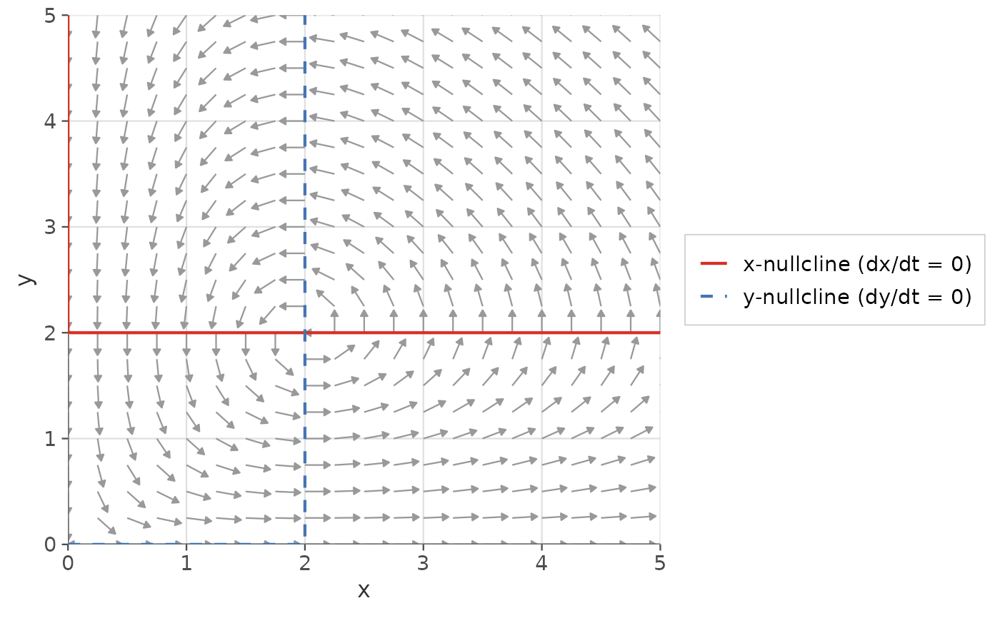
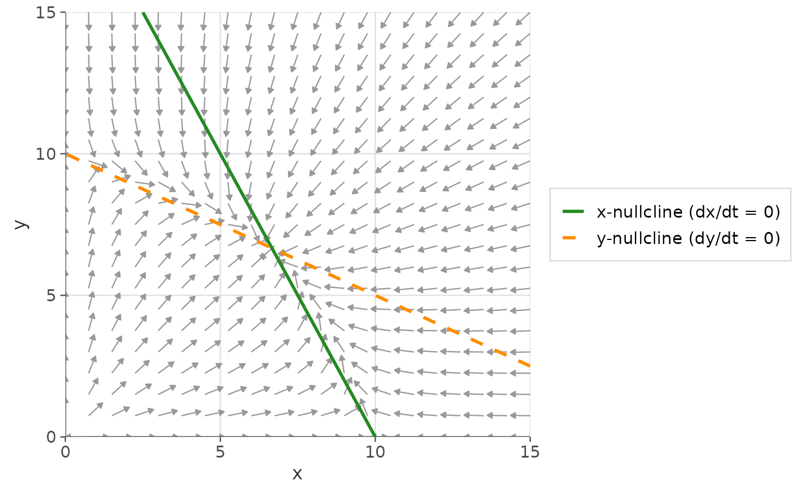

Computes and adds the nullclines of a one- or two-dimensional autonomous
ODE system to an existing phase plane plot. Returns a list of
ggplot2::layer() objects that can be added to a ggplot2::ggplot()
object with +.
Usage
gg_nullclines(
deriv,
xlim,
ylim,
system = c("two.dim", "one.dim"),
parameters = NULL,
n_points = 250L,
x_color = "#d73027",
y_color = "#4575b4",
x_linetype = "solid",
y_linetype = "dashed",
linewidth = 0.75,
add_legend = TRUE,
legend_position = "right"
)Arguments
- deriv
A function describing the ODE system, in Convention A or B. See ggphasr-package for details.
- xlim
Numeric vector of length 2. x-axis range. Should match the
xlimpassed togg_flow_field().- ylim
Numeric vector of length 2. y-axis range. Should match the
ylimpassed togg_flow_field().- system
Character:
"two.dim"(default) or"one.dim".- parameters
Parameter vector or list passed to
deriv.- n_points
Integer. Grid resolution for nullcline computation. Default:
250. Higher values give smoother curves.- x_color
Character. Color of the x-nullcline (where \(dx/dt = 0\)). Default:
"#d73027"(red).- y_color
Character. Color of the y-nullcline (where \(dy/dt = 0\)). Default:
"#4575b4"(blue).- x_linetype
Character or integer. Line type for the x-nullcline. Default:
"solid".- y_linetype
Character or integer. Line type for the y-nullcline. Default:
"dashed".- linewidth
Numeric. Line width for both nullclines. Default:
0.75.- add_legend
Logical. If
TRUE, adds a legend entry for each nullcline. Default:TRUE.- legend_position
Character string or numeric vector of length 2. Controls legend placement. One of
"right"(default),"left","top","bottom","none","inside"(top-right corner of the panel, compact styling), or a numeric vectorc(x, y)with values in[0, 1]for a custom inside position.
Value
A list of ggplot2 layer objects. Add to a ggplot with +.
Details
For a 2D system \(dx/dt = f(x,y)\), \(dy/dt = g(x,y)\):
x-nullcline: the curve(s) where \(f(x,y) = 0\)
y-nullcline: the curve(s) where \(g(x,y) = 0\)
For a 1D system \(dy/dt = f(y)\), the nullclines are the equilibrium points (where \(f(y) = 0\)), drawn as horizontal lines on the phase portrait.
Examples
# Standard workflow: flow field + nullclines
gg_flow_field(
ode_lotka_volterra,
xlim = c(0, 5),
ylim = c(0, 5),
parameters = c(alpha = 1, beta = 0.5, delta = 0.5, gamma = 1)
) +
gg_nullclines(
ode_lotka_volterra,
xlim = c(0, 5),
ylim = c(0, 5),
parameters = c(alpha = 1, beta = 0.5, delta = 0.5, gamma = 1)
)

# Customize nullcline appearance
gg_flow_field(
ode_competition,
xlim = c(0, 15),
ylim = c(0, 15),
parameters = c(r1=1, r2=1, K1=10, K2=10, a12=0.5, a21=0.5)
) +
gg_nullclines(
ode_competition,
xlim = c(0, 15),
ylim = c(0, 15),
parameters = c(r1=1, r2=1, K1=10, K2=10, a12=0.5, a21=0.5),
x_color = "forestgreen",
y_color = "darkorange",
linewidth = 1
)
